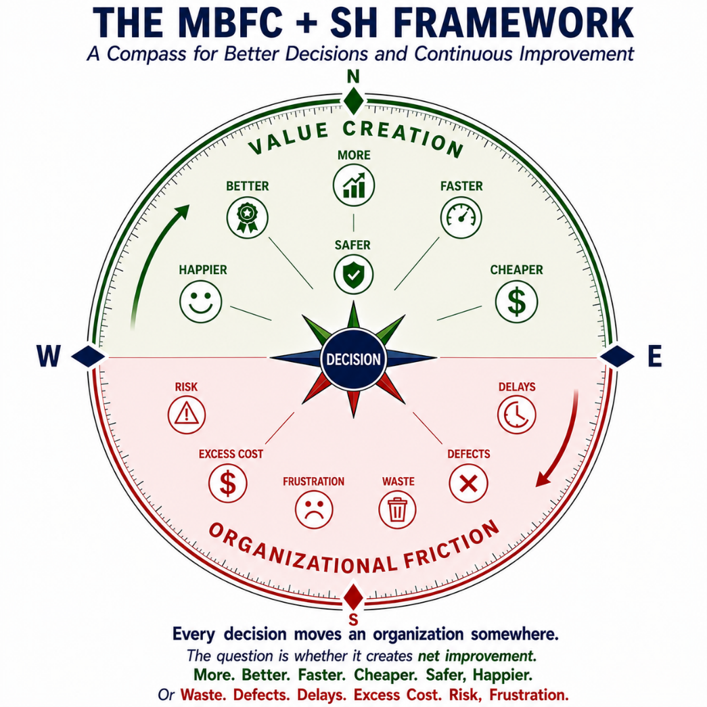
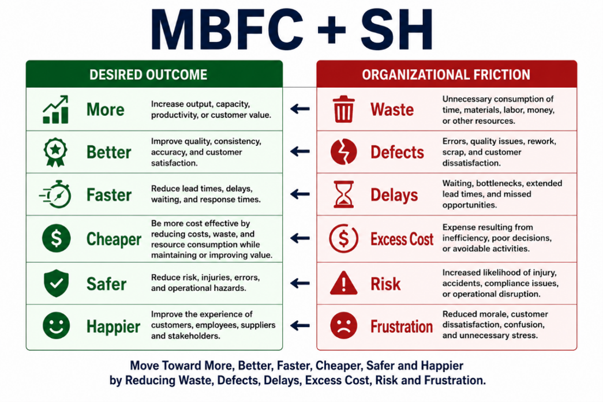
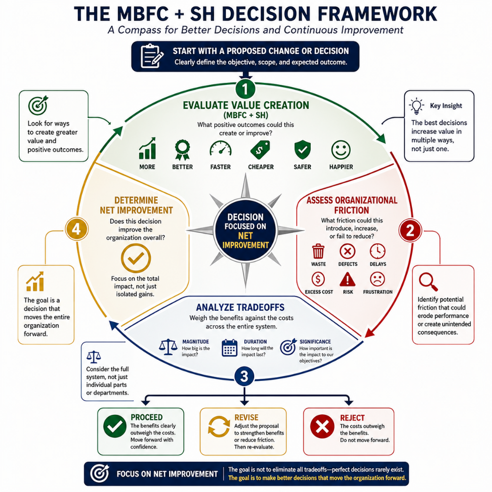
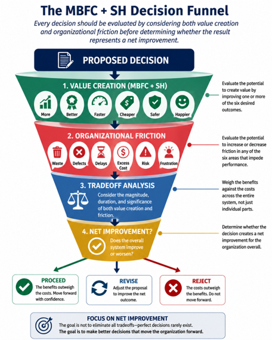
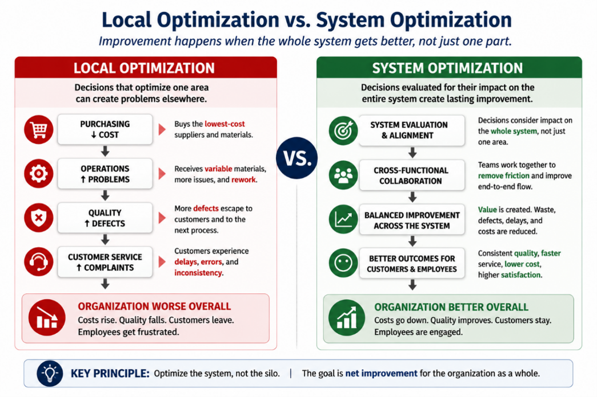
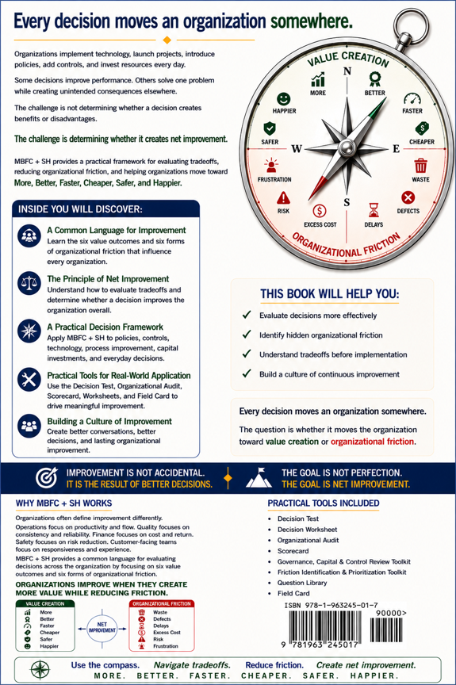

Why MBFC+SH Was Created
Improvement efforts often begin with good intentions, but decisions made in one area can create friction somewhere else. Costs are reduced while quality suffers. Controls are added while delays increase. Meetings multiply while decisions slow. Technology is implemented while frustration grows.
MBFC+SH emerged from one practical question: Does this decision create net improvement for the organization as a whole?
The MBFC+SH Compass
Every decision moves an organization somewhere. MBFC+SH helps leaders, managers, teams, and individuals evaluate whether a decision moves the organization toward More, Better, Faster, Cheaper, Safer, and Happier.
The goal is not activity. The goal is net improvement.

Every decision moves an organization somewhere. The question is whether it creates net improvement.
Inside the Book
MBFC+SH provides a common language for improvement, a practical decision framework, real-world examples, and tools for applying the framework to meetings, policies, controls, capital investments, and continuous improvement.
Value Creation vs. Organizational Friction
MBFC+SH provides a simple visual language for evaluating both sides of improvement: the value a decision may create and the friction it may introduce.

Move toward More, Better, Faster, Cheaper, Safer, and Happier by reducing Waste, Defects, Delays, Excess Cost, Risk, and Frustration.
The Framework
The book presents MBFC+SH as two related lists: desired outcomes that create value and forms of organizational friction that prevent improvement.
Value Creation
Organizational Friction
A Simple Example
A company chooses the lowest-cost supplier. On the surface, the decision appears to support a Cheaper outcome.
The purchase looked successful locally but failed at the system level. MBFC+SH helps teams evaluate both value creation and organizational friction before deciding.
How the Decision Framework Works
MBFC+SH evaluates each proposed decision by asking four practical questions: What value could it create? What friction could it introduce? What tradeoffs are involved? Does the decision create net improvement for the organization overall?

The MBFC+SH Decision Framework helps evaluate value creation, friction, tradeoffs, and net improvement.
The MBFC+SH Decision Funnel
The Decision Funnel turns the framework into a practical decision process. A proposed decision is evaluated through value creation, organizational friction, tradeoff analysis, and the final test of net improvement.

Proceed, revise, or reject based on whether the benefits outweigh the friction.
Common Problems MBFC+SH Helps Address
Who Should Read MBFC+SH?
From Local Improvement to System Improvement
Many organizations improve one area while unintentionally creating problems elsewhere. MBFC+SH helps teams evaluate decisions across the whole system, not just within one silo.

Improvement happens when the whole system gets better, not just one part.
Take the MBFC+SH Friction Test
Is your organization experiencing friction? If several of these sound familiar, the MBFC+SH tools may help identify what is slowing improvement.
Download the MBFC+SH Tools
Use these appendix tools to evaluate decisions, identify friction, review controls, and apply the MBFC+SH framework in real-world situations. The tools are designed to complement the book, which explains when, why, and how to apply them effectively.
Book + Training + Consulting
MBFC+SH is more than a book. It is a practical framework for helping organizations improve decisions, reduce friction, and create a culture of continuous improvement.
Training and consulting engagements can be customized for leadership teams, operations teams, administrative functions, nonprofits, government agencies, and small businesses.
Request InformationExample Training & Consulting Topics
Preview the Book
The front and back covers summarize the MBFC+SH promise: better decisions, less organizational friction, practical tools, and a path toward net improvement.

Every Decision Changes an Organization
Learn how to consistently move yours toward More, Better, Faster, Cheaper, Safer, and Happier.
Buy the Book Request Training Bulk Book Orders